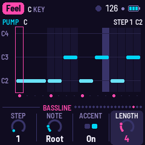
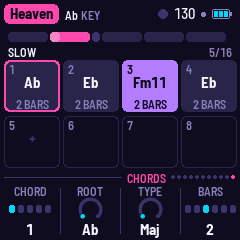
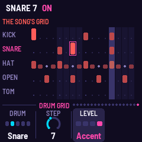
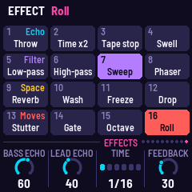

Manual
GIO-1 turns the M-VAVE FM-1 into a generative electronic disco machine, after Giorgio Moroder's Munich sound. It plays itself from the moment it's switched on: an analog-style bass sequence (or FM) out in front, a pad of strings, a choir or saws through a phaser, a synth lead that writes its own phrases, and four on the floor. Each song is a form of sections with their own chord changes; it loops for ever and changes as it goes. You steer it.
Status: alpha, tested on two FM-1s. GIO-1 0.3-alpha has been installed on two separate FM-1s and works on both. On each, other firmware was then installed over it and GIO-1 put back again, so moving between GIO-1 and other firmware has been tried too. Installing it is at your own risk: unofficial firmware could brick an FM-1. The safety nets and the way back to M-VAVE's firmware are on the Install page.
1Install
GIO-1 has no release yet. Once it is built (./build.sh, see BUILDING.md):
python3 base/tools/fm1_install.py app/build/gio.fwscwith Python 3 and pip3 install mido python-rtmidi, the FM-1 on a USB data cable. Don't unplug it while it's writing; when it finishes, the FM-1 restarts into GIO-1. fm1-base's web installer page (tools/make_site.py) does the same from Chrome or Edge once a site is published.
Go back: the web installer's "Back to the stock firmware", or M-VAVE's own updater, M-UPGRADE, from m-vave.com/download.
Installing other firmware is at your own risk. If the FM-1 ever won't start, see Troubleshooting.
2Getting started
- Switch it on. The word GIO wipes in as a chord rises and lands with a star; a moment later GIO-1 plays the first song, Feel, from its intro. Touch any control to skip the start-up: the song starts when you let go.
- Turn PRESETS for another song. It starts from the top of its form.
- Play the white keys: the lead plays them, always in the song's scale. Play three notes or more and pause: the lead answers you, and takes your notes as its theme.
- Hold a black key: an effect while you hold it (Throw, Tape stop, Sweep ...). Press FX for all sixteen.
- Turn ALGORITHM for another bass pattern; back to Song for the song's own.
- Press SEL to move on to the next section on the next bar; press REC to stay in this one.
- Press EDIT to see the bassline: tap a white key to pick a step, turn KNOB 2 for its note. Press EDIT again for the section's chords, and again for the drum grid (a white key turns a step on or off).
- Press ENV for the Bass page and turn KNOB 2: the cutoff opens.
3Controls
| Control | What it does |
|---|---|
| White keys | The lead: each key a step of the song's scale, from its key note up. The keys of the chord playing are lit (the safest notes). Three notes or more and a pause of two beats: the lead answers (see The lead, below). On the FX pages: the sixteen effects. On the Bassline and Drum grid pages: the bar's sixteen steps. |
| Black keys | Eleven effects, each while its key is held, left to right: Throw, Tape stop, Swell, Low-pass, High-pass, Sweep, Phaser, Freeze, Stutter, Drop, Roll. Lit; dark while held. |
| FX | The FX pages, one a press: Bass FX, Pad FX, Lead FX, Drums FX, then Space, then round again. On each, the white keys play the sixteen effects (see Effects). |
| PLAY | Plays / stops. From stopped, the song starts from its first section. |
| REC | A tap: HOLD, the section repeats until you tap it again. Held: the effects grid on the white keys for as long as it's held. |
| EDIT | The edit pages, one a press: Bassline, Chords, Drum grid, then round again (see The Bassline page, The Chords page, The Drum grid). |
| SEL | The next section, on the next bar. |
| OCT− / OCT+ | The bass an octave down / up (−1 to +1). |
| ALGORITHM | The bass pattern: Song (the song's own, section by section), Pump, Pump 16, Arpeggio, Gallop, Octaves, Slow. |
| PRESETS | The song. Each remembers its settings as you left it. |
| HOME, ENV, ARP, LFO, SEQ, FX, GLO | The pages: Song, Bass, Lead, Pad, Drums, Bass FX, Setup. HOME again: Mixer; ENV again: Bass FM; ARP again: Lead 2; FX: the four FX pages, then Space; GLO again: MIDI, then Mirror. Each press goes on to the button's next page, then round again. |
| SELECT | The previous / next page. With HOME held: the tempo, 80 to 150. |
| KNOB 1–4 | The page's four values. A quick turn speeds up; a slow one goes a step at a time. |
| SAVE | Saves all the songs. Held 1.5 s: the song back to its recipe (then SAVE to keep that). |
| MASTER | The volume. |
Hold any button for a second and a card says what it does; let go and nothing else happens.
4The screen

- The top line: the song in a magenta tag, its key; on the right a beat light (a play triangle while stopped), the tempo, a dot while something isn't saved, and the battery. Messages show here for a moment.
- The form: a block for each section, as wide as its bars. The one playing is lit, filling as it goes; the one coming next is a shade brighter than the rest. While held, it turns ice blue. Under it: the section's name and the bar (3/16).
- The ring: the bass pattern's sixteen steps, the first at the top. A step's size and brightness is how high its note is; a ring around it is an accent; small dots are rests. The step playing is bright. In the middle, the chord, and under it the lead's note as it plays.
- The meters (left): bass, pad, lead, drums. A dark track means the layer is out of this section.
- The drums (right): kick, snare, closed hat, open hat, tom; this bar's hits, the step playing bright.
- The knobs: the page's four values; the one being turned is lit.


5The music
The bass is the loudest thing: two saws and a square an octave down through a four-pole ladder low-pass, a short decay on its level and its filter (Cutoff, Resonance and Decay on the Bass page). It steps through a 16-step pattern written in chord degrees (root, third, fifth, seventh, octave), so it follows the chords. Most of the echo is its own: the dry note sits a little left, its repeat right. With Evolve, a weak step changes now and then (another chord note, a ghost note, a rest), and goes back home a step at a time.
The pad holds the chord on four voices, each moving as little as it can from chord to chord: Strings (two saws), a Choir (a soft wave through two vowel formants, which Bright opens) or Saws (wider, swept). Then a low-pass and a stereo phaser (four stages a side, swept slowly in quadrature, fed back).
The lead writes a four-bar phrase for each section it plays in: a motif, the motif answered, a second motif, the first again; or, when Busy is low, a call and room for an answer. Its notes walk the song's scale, landing on the chord on the strong beats, never a semitone off it. With Evolve, a note moves or the middle bar is rewritten at each repeat. Glide slides between notes; past 60 it also swoops up into a phrase.
Ten voices: Mini (three saws, one an octave down, through a ladder filter), Odyssey (a saw and a narrow pulse, resonant), Synthi (a triangle and a square, drifting), Flute (a sine with breath), Theremin (a sine, always gliding, its vibrato wide), FM Lead, FM Brass and FM Reed (two-operator FM), Choir (two saws through three vowel resonances; Tone is the vowel) and Robot (a square through two formants, short notes, no vibrato). The Lead 2 page (ARP again) has the lead's own Echo and Reverb sends, its Octave and its Tone.
Playing the lead. The white keys play it: each key a step of the song's scale from its key note up, so every note fits. While you play, the lead's own phrases wait. Play three notes or more and pause for two beats: what you played was a call, and the lead answers it a beat or two later in your rhythm, with notes of its own close to yours, ending on the chord's root or fifth. From then on your notes are the song's theme: the lead plays them where it plays, and grows the bars after them out of them (a third up, turned upside down, a third down), varied as it repeats with Evolve. One or two notes are just played. A new song forgets the theme. Notes are counted on the grid to the nearest sixteenth while the song plays.
The drums: a kick on every beat (on 1 and 3 in a half-time section), a snare-clap on 2 and 4, closed hats in eighths or sixteenths (Hats), an open hat off the beat, and syndrum toms that fall in pitch. At the end of a section there is often a fill (Fills: how often, and from 60 on, longer and with toms). A building section ends in a snare roll. With Evolve, a syndrum or a ghost snare now and then.
The form: each song is a list of sections (Intro, Verse, Chorus, Break ...), each with its bars, its chord changes, which layers play, a transposition and a few flags (half time, a build, a break). After the last section the song goes back to a section of its own and goes round again. Arrange sets how freely it goes:
- a section may play twice;
- the song may jump to another section of its loop;
- a layer may sit a section out (the lead, the pad, the hats, the snare), or the lead come in where it wasn't;
- at the start of a cycle, the whole song may move up a tone, a semitone or a minor third (or down a tone) for a cycle, and come home after.
Motion is the slow sweep over minutes: the bass's filter opening and closing, the pad brightening, the phaser's pace. A building section opens the bass filter as it goes; a break closes it and pushes the echo.
The space: a tape echo (two heads, the first at the echo's time on the right, the second at twice it on the left, each repeat darker) and Dattorro's plate reverb.
6The presets
Each preset has its own tempo, key, chord changes and arrangement. The bass lines, leads and drum parts are GIO-1's own, written as it plays.
| # | Preset | BPM | Key | The form |
|---|---|---|---|---|
| 1 | Feel | 126 | C | Intro (bass, hats) · Verse (C) · Chorus (C–E♭–F–G) · Shift (on B♭) · Verse · Chorus · Break |
| 2 | Gio | 113 | A minor | Click (hats on the beat) · Arpeggio · Disco (Am–Em) · Strings (Am–F) · Fills · House |
| 3 | Mutant | 123 | F minor | Dawn (the pad alone) · Sequence · Groove · Theme (Fm–D♭) · Bridge (B♭m–Fm) · Theme |
| 4 | Heaven | 130 | A♭ | Slow ×2 (half time, A♭–E♭–Fm11–E♭) · Lift · Fast (A♭–E♭–B♭–A♭) · Vamp (Fm11) · Fast |
| 5 | TickTock | 126 | C, then E♭ | Intro · Verse (G–F) · Pre (Am–Dm–G–C) · Chorus (G–Em7–G) · Turn (C–E♭) · the same a minor third up · Outro |
| 6 | Energy | 123 | C minor | Intro · Groove (Cm) · Lift (A♭–B♭) · Groove (Cm–B♭) · Break · Build |
| 7 | Fly | 126 | A minor | Liftoff · Theme (Am–F–G) · Drift (Am–Dm) · Theme · Space |
| 8 | Lover | 130 | C minor | Intro · Verse (Cm–B♭) · Hook (A♭–B♭–Cm) · Robot · Hook |
| 9 | Express | 128 | D minor | Intro (the bass alone) · Drive · Strings · Theme (Dm–B♭–C) · Pursuit · Theme · Run |
7The pages
| Page (button) | KNOB 1 | KNOB 2 | KNOB 3 | KNOB 4 |
|---|---|---|---|---|
| Song (HOME) | Tempo | Evolve | Motion | Arrange |
| Mixer (HOME again) | Bass | Pad | Lead | Drums |
| Bass (ENV) | Level | Cutoff | Resonance | Decay |
| Bass FM (ENV again), Analog | Voice | Cutoff | Resonance | Decay |
| Bass FM (ENV again), FM | Voice | Ratio | FM depth | FM decay |
| Lead (ARP) | Level | Voice | Busy | Glide |
| Lead 2 (ARP again) | Echo | Reverb | Octave | Tone |
| Pad (LFO) | Level | Colour | Bright | Phaser |
| Drums (SEQ) | Level | Fills | Hats | Swing |
| Bass FX (FX) | Echo | Reverb | Time | Feedback |
| Pad FX (FX twice) | Echo | Reverb | Time | Feedback |
| Lead FX (FX 3 times) | Echo | Reverb | Time | Feedback |
| Drums FX (FX 4 times) | Echo | Reverb | Time | Feedback |
| Space (FX 5 times) | Echo | Time | Feedback | Reverb |
| Setup (GLO) | Key | Tune | MIDI out | Lights |
| MIDI (GLO again) | MIDI out | Channels | Clock | Clock out |
| Mirror (GLO 3 times) | Mirror (On, Off) | |||
| Bassline (EDIT) | Step | Note | Accent | Length |
| Chords (EDIT again) | Chord | Root | Type | Bars |
| Drum grid (EDIT 3 times) | Drum | Step | Level |
The Setup page also shows the audio's load (CPU) in the top line.
The Bassline page

EDIT shows the bass pattern playing as a piano roll: a column for each sixteenth of the bar, each note at the pitch it plays now, its bar as long as it sounds. The notes are chord tones, so they move as the chords change. The step playing is lit; the step you're editing is outlined in magenta; accented steps have a magenta dot underneath. When Evolve changes a step, the note as written is shown as an outline and the note it plays instead as a dim block. The top line names the pattern and the chord, and the edited step's note (STEP 5 G2).
Tap a white key to pick its step (the keys are the bar's sixteen steps, left to right; the lit ones have a note, the step playing blinks). Changes are heard the next time round.
| Knob | |
|---|---|
| KNOB 1 · Step | which step to edit (1–16), as the white keys |
| KNOB 2 · Note | Rest, Root, 3rd, 5th, 7th, Octave, 5th up: tones of the chord playing (on a chord with no 7th, the 7th is the octave; on a Sus4, the 3rd is the 4th) |
| KNOB 3 · Accent | Off, On: louder and brighter |
| KNOB 4 · Length | Auto (until the next note, up to a quarter: as the songs play), or 1–16 sixteenths, tied: the note holds over the steps under it, which stay silent |
Putting a note on a step under a tie shortens the tie so it ends just before it. Shortening a tie brings back the notes under it.
The page edits the pattern playing: ALGORITHM picks it (Pump, Pump 16, Arpeggio, Gallop, Octaves, Slow); on Song, each section plays its own, and the page follows. Each song keeps its own copy of all six patterns, saved with its settings; SAVE held puts them back to the song's own, with everything else.
The Chords page

EDIT shows the chord changes of the section playing: the form across the top, as on the Song page, then up to eight chords in two rows, each with its length. The chord playing is lit violet; the one you're editing is outlined in magenta. Changes are heard from the next beat.
| Knob | |
|---|---|
| KNOB 1 · Chord | which chord to edit (1–8). Past the last one, New: an empty slot marked +, where turning any other knob adds a chord (a copy of the last one) |
| KNOB 2 · Root | its root, any of the twelve notes (it goes round), shown in the key it is in now |
| KNOB 3 · Type | Maj, Min, 7, Maj7, Min7, Min11, Sus4, Power (root and fifth) |
| KNOB 4 · Bars | ½, 1, 2, 3, 4 or 8 bars. On the last chord (if it isn't the only one), End takes it away |
The chords loop for as long as the section lasts. The page follows the music: when the section changes, it shows the new one's chords. To stay on one, press REC (hold) while you edit; SEL moves to the next section. Some sections share their chords (a song's two verses, say): editing one changes both.
The chords are written relative to the song's key, so changing the key (the Setup page, or a MIDI note) moves them with it. Each song keeps its own chords, saved with its settings; SAVE held puts them back to the song's own, with everything else.
The Drum grid

EDIT three times shows the song's drums: a row for each drum (kick, snare, closed hat, open hat, tom), a cell for each sixteenth, its height its level. The drum you're editing is named in magenta and the step outlined; the step playing is lit. A dim dot is something the song adds that bar beside the grid: a fill, or Evolve's ghost snare.
Tap a white key to turn that step on (Normal) or off for the drum you're editing; the lit keys are its hits.
| Knob | |
|---|---|
| KNOB 1 · Drum | Kick, Snare, Hat, Open hat, Tom |
| KNOB 2 · Step | which step (1–16) |
| KNOB 3 · Level | Off, Soft, Normal, Accent |
Until you edit them, a song's drums are made bar by bar, as they always were ("AS THE SONG MAKES THEM"). The first edit takes them, as they are made in a full section, into the song's grid ("THE SONG'S GRID"), so nothing else changes. From then on the grid plays in every section except the half-time and click ones (Heaven's slow start, Gio's opening), which keep their own drums ("THIS SECTION: ITS OWN"). The sections still bring each drum in and out, and the fills, builds and Evolve's extras still come; an open hat in a section without open hats plays as a closed one. Once the grid is edited, the Drums page's Hats knob sets the hats' level and tone, no longer how many there are. Each song keeps its own grid, saved; SAVE held puts its drums back to the song's own.
8MIDI
The MIDI page (GLO, then GLO again): MIDI out, Channels, Clock and Clock out. They belong to the FM-1, not to a song.
- In (USB and the TRS jack): a note on channel 1 moves the key. Clock says where MIDI clock is taken from: Internal (none: GIO-1 keeps its own time, the default), USB or TRS. From the port chosen, clock drives the grid (EXT in the top line); Start plays the song from the top, Stop stops, Continue goes on. With no clock coming in, GIO-1 keeps its own time.
- Out (USB, when MIDI out is on; the FM-1's TRS jack is an input only): Channels 1, 2, 3, 10 (the default) puts the bass on channel 1, the pad on 2, the lead on 3, the drums on 10; 4, 5, 6, 11 puts them on 4, 5, 6 and 11. The drums are General MIDI notes: 36 kick, 39 clap, 42 and 46 hats, 45 tom. Clock out sends MIDI clock (and start and stop) while GIO-1 keeps its own time.
The FM-1 also shows up on a computer as a USB audio input: GIO-1 can be recorded over the cable.
Screen mirror: GIO-1's screen and panel can be shown live on a computer, big, for playing in front of people or for anyone who finds the 1.54-inch screen hard to read. Plug the FM-1 in with a USB cable, open the website's Mirror page in Chrome or Edge, press Connect and allow MIDI. The page can also play the panel. It costs the music nothing: GIO-1 sends its screen only while the page asks for it. The FM-1's own Mirror page (GLO three times) says the same in short, shows when a computer is showing the screen, and has KNOB 1 to switch mirroring Off: then no computer sees the screen or plays the panel (it's saved; switch it off to rule the mirror out when something seems wrong).
8a. Effects

Sixteen effects, each on while its key is held, eased in and out; any number together. Every page FX brings up (the FX pages, below) shows them as a grid, and the white keys play them (white key 1 is the lowest); REC held brings the same grid up on any page for as long as it's held, and a key still held when REC is let go keeps its effect until it's let go. Eleven of them are also on the black keys at all times.
Bass FM (ENV again): the bass's Voice, Analog (two saws and a square an octave down) or FM (a sine modulated by a sine, with a sine an octave down for weight), and the FM voice's own settings: Ratio, the modulator's pitch against the note (0.5, 1, 1.5, 2, 3, 4: 1 and 2 the classic FM basses, 3 and 4 metallic), FM depth, how bright and growling it is, and FM decay, how fast that brightness falls after each note (short: a pluck; long: a growl that stays). Both voices go through the same ladder filter and envelope, so the Bass page's Level, Cutoff, Resonance and Decay work on either. Bass FM's other three knobs follow the voice: with Analog they are the filter's Cutoff, Resonance and Decay (the Bass page's own), with FM the FM's Ratio, FM depth and FM decay. Each song keeps its own; every song starts on Analog.
The Mixer (HOME again): the four instruments' levels side by side, KNOB 1–4 Bass, Pad, Lead and Drums. They are the same settings as each instrument's own page's Level, so a change shows on both.
The FX pages. FX goes through a page for each instrument, one a press: Bass FX, Pad FX, Lead FX and Drums FX, then Space, then round again; from any other page, FX starts at Bass FX. Each shows the effects grid. On each, KNOB 1 Echo and KNOB 2 Reverb are how much of that instrument goes into the tape echo and the plate; KNOB 3 Time and KNOB 4 Feedback are the echo's own. There is one echo for all four, so Time and Feedback are the same on every page: turn them on one and the others follow. The Space page's Reverb is the plate's overall level, over all four sends. Each song keeps its own settings; the songs start with the pad out of the echo (Pad echo 0). The songs' own settings sit in the lower half of each send; turn Echo and Reverb up past about 60 for a lot more: the bass's Reverb, at 100, is 30 dB more than at 50.
| Row | 1 | 2 | 3 | 4 |
|---|---|---|---|---|
| Echo (white 1–4) | Throw: everything into the echo | Time x2: the echo's time doubled, gliding there and back | Tape stop: the music winding down through the tape, its pitch diving, then silence; let go: back up to speed | Swell: more into the echo, fed back to the edge: it builds while held |
| Filter (5–8) | Low-pass: the mix down to 350 Hz | High-pass: the mix up to 1.3 kHz, thin | Sweep: the bass's filter open three octaves, Moroder's hand on the cutoff | Phaser: a deep phaser on everything |
| Space (9–12) | Reverb: everything into the plate | Wash: the dry down, everything into the echo and the plate | Freeze: the plate stops listening and rings on | Stutter: a sixteenth of the mix caught and looped |
| Moves (13–16) | Drop: everything out but the bass and the kick | Gate: the pad chopped in sixteenths | Octave: the bass an octave up | Roll: a snare every sixteenth, rising |
9Saving
Each song keeps its settings as you left it. SAVE saves all of them; GIO-1 also saves by itself a few seconds after a change while it is stopped (a save silences the sound for a moment, so never while playing). SAVE held puts the song back to its recipe, its chords too. Tune and MIDI out belong to the FM-1, not to a song.
10Troubleshooting
Update mode by hand: hold REC while you switch the FM-1 on, and keep holding until the screen says UPDATE MODE (REC). The FM-1 is then in the chip's own update mode, where the web installer and M-VAVE's updater can reach it. In SAFE MODE, REC does the same.
Calibration: if a button or knob does the wrong thing, hold OCT− and OCT+ while you switch the FM-1 on, and follow the screen.
After a crash: a red CRASH screen, then a restart a few seconds later; the next start shows RESTARTED AFTER A CRASH and an address. If GIO-1 crashes twice in a row while starting, it starts in SAFE MODE: no sound, but USB works, so the installer can reinstall it or put the stock firmware back. If even that fails, the FM-1 drops into the chip's own update mode; fm1-base's rescue (felucca-bsp/tools/fm1_rescue.sh, on a Mac) puts M-VAVE's firmware back from there.
11Parameters
| Parameter | Range | What it does |
|---|---|---|
| Tempo | 80–150 | Beats a minute |
| Evolve | 0–100 | How much the bass pattern, the lead's phrases and the drums change as they repeat |
| Motion | 0–100 | How far the slow sweeps go (bass filter, pad brightness, phaser's pace) |
| Arrange | 0–100 | How freely the form goes: repeats, jumps, layers out and in, a cycle in another key |
| Bass Level · Cutoff · Resonance · Decay | 0–100 | The bass's level, its filter's cutoff, its resonance (the peak at the cutoff), the length of its notes and envelope |
| Lead Level · Busy · Glide | 0–100 | The lead's level, how many notes a bar (and whether it leaves room), its portamento |
| Lead Voice | Mini, Odyssey, Synthi, Flute, Theremin, FM Lead, FM Brass, FM Reed, Choir, Robot | |
| Lead echo · Lead reverb · Tone | 0–100 | The lead's own sends to the echo and the plate; its brightness (the Choir's vowel) |
| Lead octave | −1, 0, +1 | |
| Channels | 1,2,3,10 or 4,5,6,11 | Bass, pad, lead, drums |
| Clock | Internal, USB, TRS | Where MIDI clock is taken from |
| Clock out | Off, On | |
| Pad Level · Bright · Phaser | 0–100 | The pad's level, its brightness (the choir's vowel), the phaser's depth and feedback |
| Pad Colour | Strings, Choir, Saws | |
| Drums Level · Fills · Hats | 0–100 | The kit's level, how often and how long the fills, the hats' level, colour and density (sixteenths from 35) |
| Swing | 50–75% | The off sixteenths late |
| Echo · Feedback · Reverb | 0–100 | The bass's send to the echo, the echo's repeats, the plate's overall level |
| Bass voice | Analog, FM | Bass FM's KNOB 1 |
| Ratio | 0.5, 1, 1.5, 2, 3, 4 | The FM bass's modulator against the note |
| FM depth · FM decay | 0–100 | How bright the FM bass is; how fast that falls after a note (30 ms to 1.5 s) |
| Bass verb · Pad echo · Pad verb · Drum echo · Drum verb | 0–100 | Each instrument's sends (the FX pages): 50 the reverbs as they were; Drum echo the snare's and toms'. Above 50 (the reverbs) or 60 (the echoes), all the sends grow steeply |
| Echo time | 1/16, 1/8, 1/8., 1/4, 1/4., 1/2 | In time with the tempo |
| Key | C–B | The song's key |
| Tune | ±50 cents | |
| MIDI out | Off, On | |
| Lights | Off, On, Keys | The keys (and the buttons' glow) |
| Pattern (ALGORITHM) | Song, Pump, Pump 16, Arpeggio, Gallop, Octaves, Slow | |
| Bass octave (OCT) | −1, 0, +1 |
12Credits
Inspired by and modelled on AMB-1 by Charles Vestal, DUB-1 by Santiago Beguería and NACHTFAHRT by Cranky Man, and influenced by the music of Giorgio Moroder, Patrick Cowley, Marc Cerrone, Space, Daft Punk and many others. You are all giants, and I stand on your shoulders. I'd like to give credit for sparking this idea to YouTube user @mateocarrion7776, who posted on a recent thread on my channel those immortal words, "My name is Giovanni Giorgio…", and set off this train of thought.
A fork of AMB-1 by Charles Vestal: its platform, panel, plate reverb, tape echo and screen reader. Built on fm1-base and felucca-bsp, from Felucca by Leo Kuroshita (Hügelton Instruments). The reverb is Jon Dattorro's plate ("Effect Design, Part 1", JAES 1997). MPL-2.0; see LICENSING.md.
M-VAVE and FM-1 are trademarks of their owners. GIO-1 is not affiliated with M-VAVE, Giorgio Moroder or any artist named here.